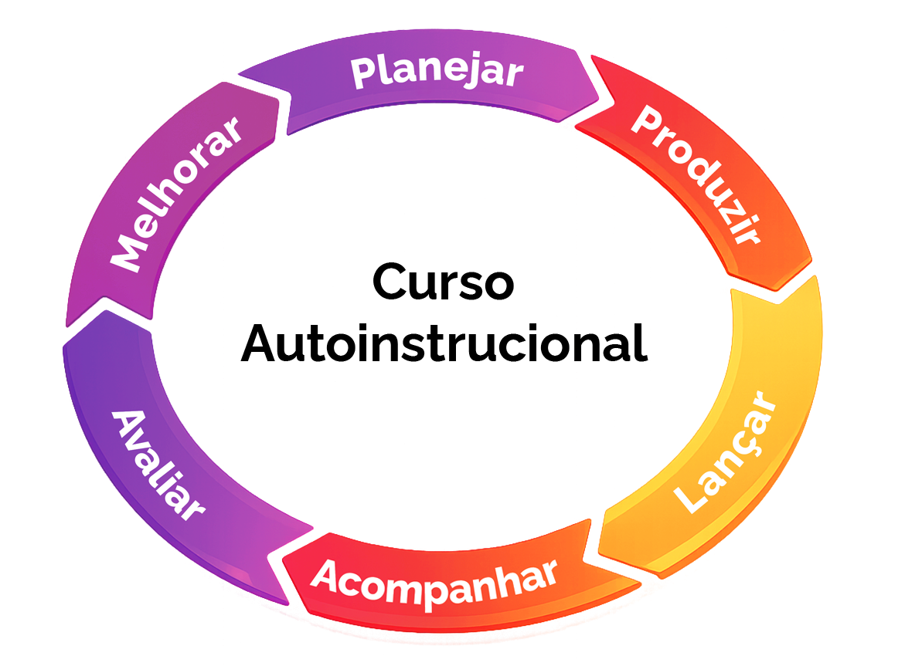

Pesquisa e Análise
Realize uma investigação detalhada do público-alvo, considerando características demográficas e necessidades. Análise das tendências para diferenciar o curso.
Seja bem-vindo e bem-vinda!
A seguir veja algumas informações importantes
sobre esta aula.
Ao final desta aula você poderá:

Identificar o papel estratégico do conteudista no processo de produção de cursos autoinstrucionais
Reconhecer as etapas de produção e os procedimentos que antecedem a entrega do conteúdo bruto.
Identificar as camadas de prazos de entrega, assim como a relação entre a entrega do conteúdo bruto e o fluxo de produção.
Na aula anterior, você teve a oportunidade de mergulhar no universo da Educação a Distância (EaD). Juntos, alinhamos os conceitos fundamentais que sustentam essa modalidade de ensino, explorando suas inovações e desafios.
Você também se familiarizou com cada um dos passos do fluxo de produção necessário para a criação de um curso autoinstrucional online, desde a concepção da ideia inicial até as estratégias de avaliação.

Vamos avançar para a produção de conteúdos para cursos autoinstrucionais!
Agora, é hora de aprofundar nosso conhecimento e
nos concentrarmos em uma
etapa essencial do processo, a de Produção.
Nessa etapa temos uma fase que
antecede a entrega do material bruto pelos
conteudistas envolvidos no projeto.
É nesse momento que se define:
• a qualidade final do conteúdo que será
apresentado aos estudantes.
• quais são as melhores práticas na elaboração
de materiais.
• como garantir que a informação seja não apenas
precisa, mas também
envolvente e motivadora.
E aqui é fundamental a colaboração entre
educadores e designers instrucionais
A palavra "conteudista" é um neologismo interessante que designa a pessoa responsável por colaborar na criação do conteúdo de um curso. Em geral, são especialistas em determinados assuntos
Colaborar na elaboração de um curso a distância envolve não apenas a produção de textos e referências essenciais, mas também a participação ativa na elaboração de experiências de aprendizagem que engajem os estudantes em sua área de atuação ou de pesquisa. Em essência, é um papel vital, quase como ser um chef de cozinha que prepara uma receita especial — é preciso tornar o aprendizado irresistível!
No módulo 2 abordaremos as características da avaliação com maior profundidade. Contudo, cabe aqui ressaltar que as questões alinhadas aos objetivos de cada aula devem constar do material bruto a ser encaminhado ao design educacional.
"A Educação a Distância (EaD) pode ser definida como um conjunto de métodos instrucionais, em que alunos e tutores estão distantes geograficamente, mas têm comunicação facilitada por intermédio das Tecnologias da Informação e Comunicação (TICs)."
Ser conteudista é uma oportunidade valiosa de impactar diretamente o processo educacional, pois não se trata apenas de estruturar e elaborar conteúdos que facilitam o aprendizado, mas também é uma oportunidade de desempenhar um papel primordial na formação e no desenvolvimento de muitos estudantes. Ao criar materiais que atendem às necessidades e interesses dos estudantes, o conteudista ajuda a moldar suas experiências de aprendizado e a promover habilidades essenciais para o futuro, contribuindo assim para a divulgação e a democratização dos saberes.
A seguir vamos detalhar melhor as principais funções do conteudista para que você não perca nenhuma dica.
No planejamento o ideal é o conteudista se envolver no planejamento da metodologia e na organização dos conteúdos. Isso inclui a escolha das estratégias de ensino-aprendizagem que serão utilizadas durante o módulo ou disciplina, garantindo que tudo esteja alinhado com os objetivos educacionais do curso. Porém, em alguns casos essa etapa fica a cargo da coordenação.
A identidade visual é um passo muito importante antes de criar o conteúdo de um curso online. Nessa etapa, é preciso entender quem são os estudantes, como eles vão acessar o curso e qual tipo de interface combina melhor com o perfil deles. A seguir, vamos ver as principais etapas para construir essa identidade de forma estratégica, destacando o trabalho conjunto entre coordenação, conteudistas e designers gráficos.
Realize uma investigação detalhada do público-alvo, considerando características demográficas e necessidades. Análise das tendências para diferenciar o curso.
Com as informações obtidas, determine os valores, a missão e a mensagem que o curso deseja transmitir. Isso guiará todas as decisões de design subsequentes.
Desenvolva um logotipo único e memorável que capture a essência do curso. Designers gráficos irão criar e refinar opções até encontrar a versão ideal. Essa criação não é obrigatória
Selecione uma paleta de cores que se alinhe ao tema abordado.
Opte por fontes legíveis que complementem o logotipo e a paleta de cores, garantindo uma aparência coesa.
Crie elementos gráficos adicionais, como ícones e padrões, para enriquecer materiais promocionais e plataformas online, tornando a identidade visual mais envolvente.
Aplique a identidade visual de forma consistente em todos os materiais do curso, como sites e redes sociais, para garantir reconhecimento e credibilidade.
Monitorar e coletar feedback sobre a eficácia da identidade visual é primordial. Ajustes devem ser feitos conforme necessário para manter a relevância e o impacto
Seguir essas etapas garante que a identidade visual do curso não só seja atraente, mas também comunique de forma clara e eficaz a proposta educacional, gerando conexão e engajamento com os estudantes. Todas essas etapas podem ser ajustadas com a equipe de Design Gráfico, que, inclusive, pode coletar as informações acima por intermédio de um formulário destinado aos coordenadores do curso.
A elaboração do conteúdo é a segunda etapa na criação de um curso online e segue a definição da estratégia do curso, que serve como um guia nesse processo. É durante essa fase que as ideias começam a tomar forma e o curso começa a ganhar vida.
Você vai encontrar mais detalhes sobre a elaboração do conteúdo no Módulo 2, Criação do material didático digital.
Agora que já conheceu as fases que antecedem a elaboração do material didático para o curso online autoinstrucional, exploraremos a relação entre a elaboração de conteúdo bruto e o fluxo de produção de cursos online.
O foco será o direcionamento de estratégias para criar conteúdo bruto especificamente pensado para o formato online, destacando a importância da seleção de conteúdos relevantes e o cumprimento de prazos para evitar gargalos no fluxo de produção.
Um dos primeiros passos na elaboração do conteúdo bruto é definir quais tópicos e conceitos são essenciais para o aprendizado.
Assegure-se de:
Alinhar com objetivos de aprendizagem: estabeleça uma conexão clara entre o que se deseja ensinar e os objetivos de aprendizagem. Cada tema deve ter uma finalidade pedagógica bem definida.
Identificar conteúdos importantes: realize uma curadoria de conteúdos que seja pertinente ao público-alvo e ao contexto do curso.
Lembre-se! O material didático é todo o contato que o estudante tem com o conteúdo. Quanto mais clara for a informação, melhor será o seu desempenho. Não existe a possibilidade de levantar a mão e fazer uma pergunta para elucidar uma questão. Fique de olho!
Como destacamos acima, estruturar o conteúdo de forma lógica e clara é fundamental. Sendo assim, utilize os seguintes princípios para a organização:
Clique no do card para ver as informações no verso.
A avaliação em um curso online autoinstrucional apresenta especificidades que diferem da avaliação em ambientes presenciais. Um dos principais desafios é garantir que a avaliação não apenas mensure a retenção de conhecimento, mas também avalie a aplicabilidade e a compreensão profunda dos conteúdos abordados, considerando que, nessa modalidade de ensino, não há interação direta entre o formador e o estudante. Sendo assim, comandos, enunciados e contextualização dos temas tratados na questão tornam-se fundamentais para a boa compreensão da tarefa.
Nesse cenário, as avaliações podem incluir quizzes interativos, questões objetivas, entre outras possibilidades autônomas já citadas, permitindo que os estudantes demonstrem suas habilidades de diferentes maneiras, como também utilize esse momento como etapa contínua de aprendizagem.
Outra característica fundamental da avaliação em cursos online autoinstrucionais é a importância do feedback, que se torna um elemento essencial para a aprendizagem.
O feedback eficaz deve ser rápido e construtivo, orientando os estudantes não apenas sobre os acertos, mas principalmente sobre os erros.
Quando um estudante recebe uma correção detalhada após uma resposta incorreta, isso proporciona uma oportunidade valiosa de reflexão e aprendizagem, ajudando-o a identificar lacunas em seu conhecimento e a ajustar sua abordagem. Já o feedback em relação às respostas corretas fortalece a confiança do estudante e o incentiva a continuar no processo de aprendizagem.
A criação de conteúdo bruto e a elaboração de storyboards são processos que exigem colaboração significativa entre professores conteudistas e designers educacionais. Ao empregar técnicas de transposição didática, ambos os profissionais podem garantir que o conteúdo seja acessível, relevante e eficaz.
Nesta aula você reconheceu as etapas de produção e os procedimentos que antecedem a entrega do conteúdo bruto, assim como tornou-se capaz de identificar as camadas de prazos de entrega e a importante relação entre a entrega do conteúdo bruto e o fluxo de produção.
Na próxima aula você vai conhecer a arquitetura do storyboard, a implantação da transposição didática e como ocorre a validação desse material.
Nos vemos lá!
Objetivo: Identificar o papel do conteudista no processo de produção de cursos autoinstrucionais.
Antes de entregar o material didático, o conteudista precisa compreender o papel estratégico que desempenha na estruturação de um curso online. Assinale a alternativa que melhor representa as atribuições do conteudista em um curso autoinstrucional:
Objetivo: Identificar as camadas de prazos de entrega, assim como a relação entre a entrega do conteúdo bruto e o fluxo de produção.
A entrega do conteúdo bruto marca o início de uma cadeia de produção que envolve diversos profissionais. Por isso, sua clareza, completude e alinhamento com os objetivos de aprendizagem são fundamentais para evitar gargalos e garantir a qualidade final do curso. Sobre a elaboração do conteúdo bruto em cursos autoinstrucionais, assinale a alternativa correta: